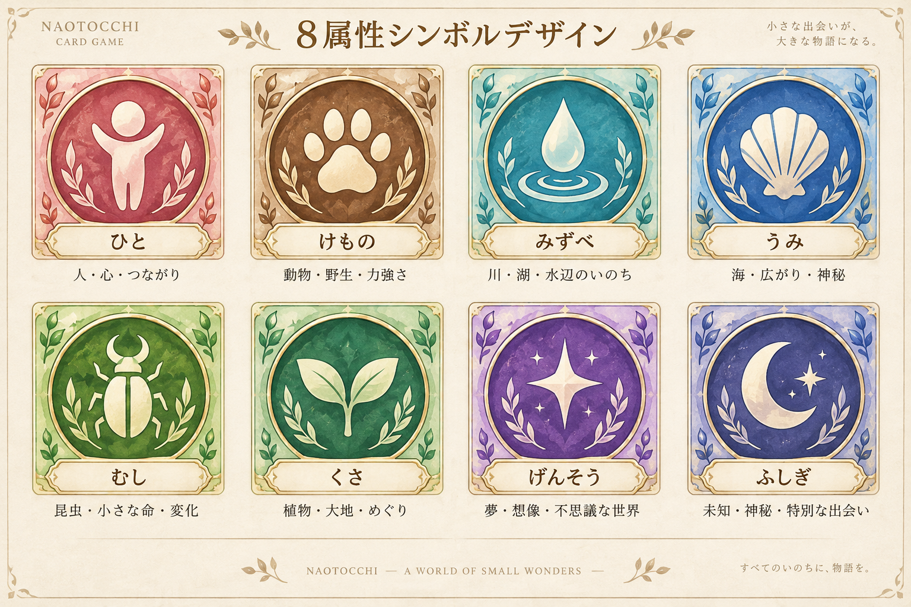

採用原画 → Pilot SVG

ひと
#E78E98 / stroke 1.7
けもの
#A97A50 / stroke 1.7
みずべ
#55BFC2 / stroke 1.7
うみ
#4D82C6 / stroke 1.7
むし
#A7C94B / stroke 1.7
くさ
#3EA46B / stroke 1.7
げんそう
#916AC3 / stroke 1.7
ふしぎ
#414B87 / stroke 1.7